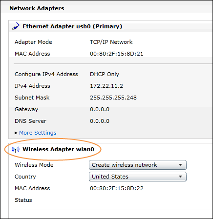
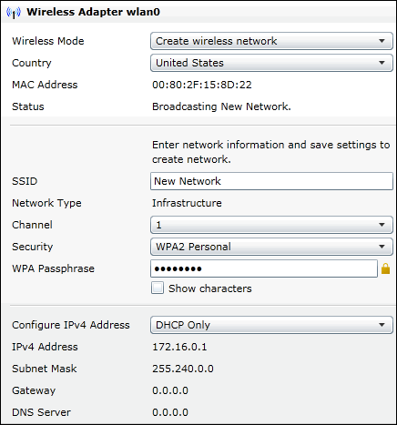

Creating a Wireless Network
You can use the myRIO as an access point to create wireless networks. After you create a wireless network using the myRIO, you can connect clients to this wireless network. Complete the following steps to create a wireless network using the myRIO:
 |
- Use a USB cable to connect the myRIO to your computer.
- Click the Configure myRIO button in the myRIO USB Monitor to launch NI Web-based Configuration & Monitoring in your web browser.
Note If you have already connected the myRIO to your computer and do not have the myRIO USB Monitor open, you can open your web browser and enter http://172.22.11.2 in the address bar to launch Web-based Configuration & Monitoring.
|
 |
- Click the Network Configuration button
 on the left of the web page to display the Network Configuration page. You will configure the settings of the wireless network in the Wireless Adapter wlan0 section. on the left of the web page to display the Network Configuration page. You will configure the settings of the wireless network in the Wireless Adapter wlan0 section.
|
 |
- Select Create wireless network from the Wireless Mode pull-down menu.
- Select the country in which you are located from the Country pull-down menu.
- Specify a name for the wireless network in the SSID text box.
- (Optional) Select a channel from the Channel pull-down menu. The valid value range of Channel is [1, 11]. National Instruments recommends that you specify 1 for Channel.
- Select one of the following options from the Security pull-down menu:
- Open—Creates a public wireless network.
- WPA2 Personal—Creates a private wireless network.
- If you select WPA2 Personal in the previous step, enter security credentials in the WPA Passphrase text box. Ensure that the length of characters in your WPA passphrase is within the range [8, 63].
- Select DHCP Only from the Configure IPv4 Address pull-down menu.
- Click Save to save the wireless network settings.
- Verify that you can connect clients to the wireless network that you create. The wireless LED on the myRIO turns red when you try to connect a client to the network. After you successfully connect the client to the network, the wireless LED keeps flashing.
|
Congratulations! You have successfully created a wireless network. You now can connect clients to this wireless network. If you want to create another wireless network, click the Enter new security settings link in the Wireless Adapter wlan0 section, repeat steps 6 through 11.
Note The wireless network that you create with the myRIO accepts up to six clients. National Instruments recommends that you connect at most three clients to such a wireless network.